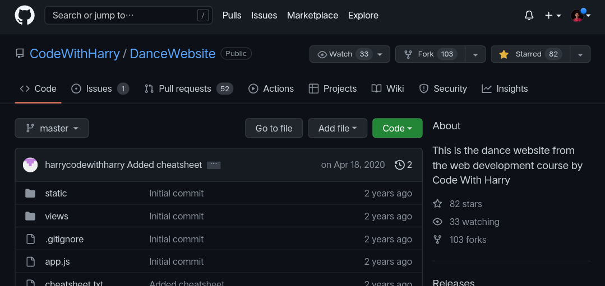

Top 5 Best Website For Programmers
Looking to learn and create applications with example code snippets? Here are the best free code sample websites to start with.

Most programmers are not just desktop programmers, web programmers or scripting gurusinstead, they're often all of the above. Knowing where to find free samples of code online can help you learn and create applications with these working code snippets.
Every developer has a list of their favorite websites where they not only search for free sample code, but also participate in the greater developer community. There are many of these sites to choose from.
1. GitHub

GitHub has been loved by millions of developers across the globe for years, and justifiably. The portal holds some of the best developers, resources and libraries, making it a go-to choice for anyone in the data science, AI/ML field wanting to learn more about and excel in it.
Analytics India Magazine has outlined the top 10 repositories every aspiring ML developer should follow on GitHub; these consist of all-rounded resources to learn and practice the art, resources that help in learning and roadmaps to work in the industry.